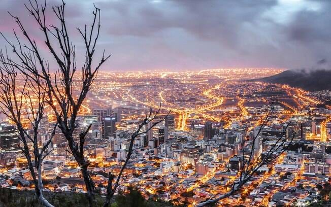
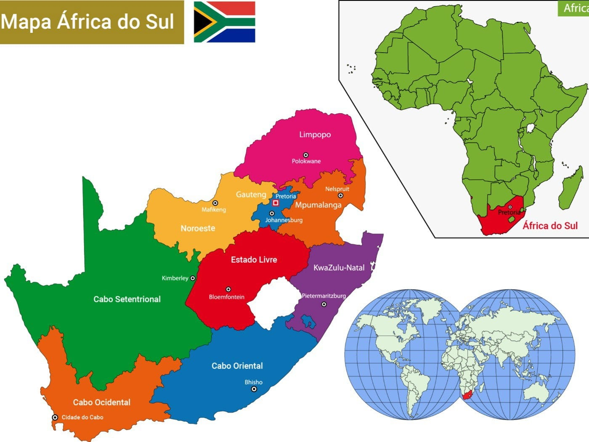
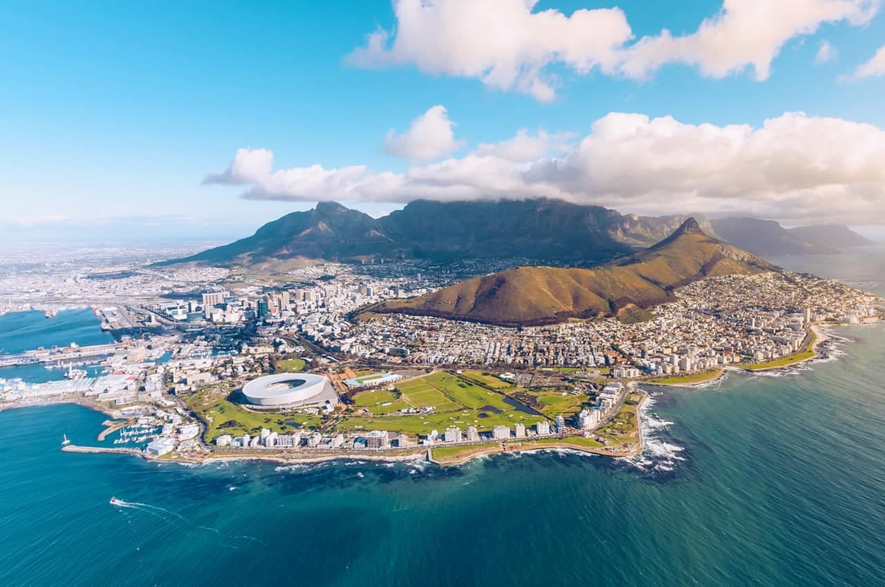
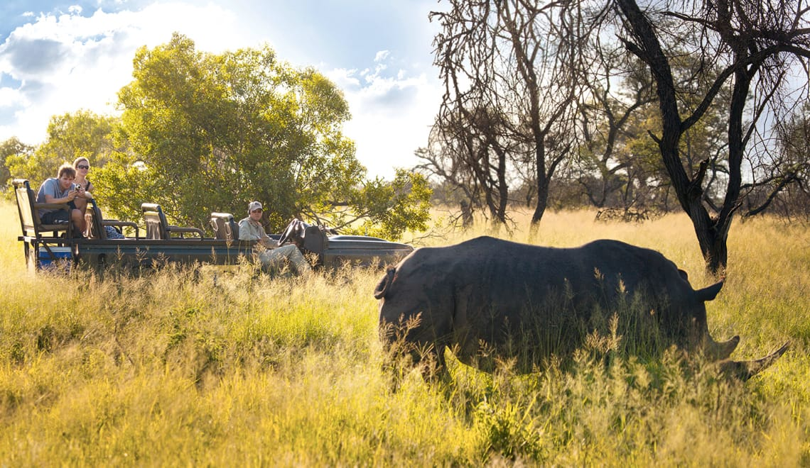
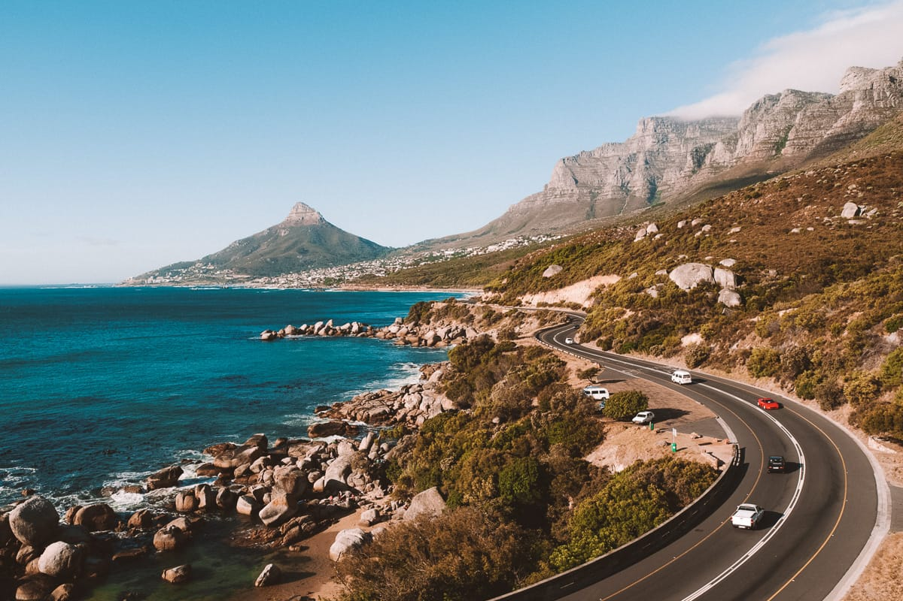
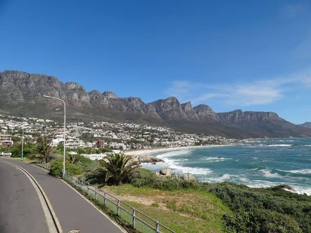

Um país de muitas vozes
A África do Sul está localizada no extremo sul do continente africano. Sua sociedade foi formada por povos africanos com histórias próprias e também por influências trazidas pela colonização europeia e por migrações de outras regiões do mundo. Essa diversidade aparece nos idiomas, nas religiões, na música, na culinária e nos costumes.
O país também tem uma história marcada pela resistência ao colonialismo e ao Apartheid, sistema de segregação racial que foi desmontado no início da década de 1990. As eleições democráticas de 1994 representaram um marco na construção de uma nova etapa política.
África do Sul em números
1. Formação dos povos e do país atual
A história sul-africana é muito anterior à chegada dos europeus.
O território é habitado há milhares de anos. Entre seus povos mais antigos estão comunidades San, conhecidas por suas tradições de caça, coleta e arte rupestre, e comunidades Khoikhoi, historicamente associadas ao pastoreio. Esses povos têm histórias e identidades próprias; o termo “Khoisan” é usado, em alguns contextos, como denominação coletiva, mas não significa que sejam um único povo.
Ao longo de muitos séculos, comunidades de línguas bantu também se estabeleceram na região, formando sociedades agrícolas, reinos e redes comerciais. A partir de 1652, a Companhia Holandesa das Índias Orientais instalou uma estação de abastecimento no Cabo. Mais tarde, o domínio britânico se expandiu. Em 1910 foi criada a União Sul-Africana; em 1961, o país tornou-se uma república. A democracia multirracial foi estabelecida em 1994, após a queda do regime do Apartheid.
- Antes da colonização europeia: diferentes povos africanos habitavam a região, com sociedades, línguas e formas de organização próprias.
- 1652: estabelecimento neerlandês no Cabo, inicialmente como ponto de abastecimento marítimo.
- séculos XVIII e XIX: expansão colonial, disputas territoriais e conflitos envolvendo comunidades africanas, colonos e britânicos.
- 1910 e 1961: formação da União Sul-Africana e, posteriormente, proclamação da república.
- 1948–início dos anos 1990: período do Apartheid, sistema institucionalizado de segregação racial.
- 1994: primeiras eleições nacionais democráticas com participação de pessoas de todas as raças; Nelson Mandela é eleito presidente.
2. Etnias e diversidade da população
A população reúne comunidades com diferentes origens, línguas e experiências históricas.
Povos africanos
Entre os principais grupos estão Zulu, Xhosa, Sotho, Tswana, Pedi, Tsonga, Venda e Ndebele. Cada comunidade possui tradições, histórias e expressões culturais próprias.
Outras comunidades
Também existem comunidades Afrikaner e de língua inglesa, sul-africanos de origem indiana e comunidades classificadas historicamente como “Coloured” no contexto censitário do país. Essas categorias não resumem a identidade individual de cada pessoa.
3. Religiões: tradições e influências
Antes e durante a colonização, diferentes povos africanos mantinham práticas espirituais próprias, muitas delas relacionadas à ancestralidade, à comunidade e à relação com a natureza. A colonização europeia contribuiu para a expansão do cristianismo, que hoje é a religião mais praticada no país.
A sociedade sul-africana também inclui comunidades muçulmanas, hindus, judaicas e pessoas que seguem religiões tradicionais africanas, além de pessoas sem religião. Portanto, não existe uma única crença que represente todos os sul-africanos.
4. Idiomas: uma riqueza nacional
A África do Sul reconhece 12 idiomas oficiais, incluindo a Língua de Sinais Sul-Africana. Entre eles estão isiZulu, isiXhosa, Sesotho, Setswana, Sepedi, Xitsonga, Tshivenda, siSwati, isiNdebele, Afrikaans, inglês e Língua de Sinais Sul-Africana.
As línguas africanas são anteriores à colonização. O africâner desenvolveu-se principalmente a partir do neerlandês falado no Cabo, com influências de outras línguas. O inglês ganhou força durante o domínio britânico e permanece importante na administração, nos negócios e no ensino. Nenhum idioma, porém, representa sozinho toda a população.
5. Economia: principais atividades e produtos
A economia é diversificada, embora marcada por desigualdades sociais e diferenças regionais.
Mineração
O país possui importantes reservas minerais e é conhecido pela produção de platina e outros metais do grupo da platina, ouro, carvão, manganês e cromo. A mineração tem papel relevante nas exportações e na atividade industrial.
Agricultura
Entre os produtos agrícolas estão milho, cana-de-açúcar, frutas cítricas, uvas e vinho. A produção varia conforme o clima e a disponibilidade de água em cada região.
Indústria e serviços
Há produção de veículos, produtos químicos, alimentos e equipamentos. Os serviços, incluindo finanças, comércio, transportes e tecnologia, também têm grande peso na economia.
Turismo
Parques nacionais, safáris, praias, vinícolas, cidades históricas e paisagens montanhosas atraem visitantes e geram empregos em diversas regiões.

6. Características culturais marcantes
A cultura sul-africana é plural: reúne tradições de diferentes povos africanos e influências europeias e asiáticas. Ela aparece nas celebrações comunitárias, nas roupas, no artesanato, na literatura, na dança e nas artes visuais.
Na música, o país tem cenas variadas, que incluem jazz, maskandi, kwaito e amapiano. Danças e performances tradicionais ajudam a transmitir histórias e identidades comunitárias. A expressão “Nação Arco-Íris”, popularizada por Desmond Tutu, tornou-se um símbolo da diversidade e da busca por convivência democrática — embora não signifique que as desigualdades tenham desaparecido.
Na culinária, pratos e costumes refletem essa mistura de influências. O braai é um churrasco muito popular; o bobotie é um prato assado de carne temperada com cobertura de ovos; e o biltong é carne curada e seca.
7. Colonização, resistência e fim do Apartheid
A colonização europeia começou no Cabo com a presença neerlandesa em 1652 e se transformou ao longo do tempo com a expansão britânica. A tomada de terras, as guerras, as políticas de trabalho e a perda de autonomia afetaram profundamente as populações africanas.
Em 1948, o governo passou a aplicar oficialmente o Apartheid, um sistema de leis que separava a população por classificações raciais e restringia direitos, circulação, moradia, educação e participação política da maioria negra. A resistência ocorreu de várias formas, por meio de organizações, protestos, movimentos comunitários, sindicatos e campanhas internacionais.
Após negociações e mobilização interna e externa, as leis do Apartheid foram revogadas e, em 1994, ocorreram eleições democráticas sem exclusão racial. Esse processo é frequentemente descrito como transição democrática ou libertação do Apartheid, e não como uma reconquista territorial simples.
8. Personalidades históricas
Nelson Mandela
Ativista contra o Apartheid, ficou preso por 27 anos e tornou-se o primeiro presidente negro eleito democraticamente, em 1994.
Desmond Tutu
Arcebispo e defensor dos direitos humanos; teve papel importante na luta contra o Apartheid.
Steve Biko
Intelectual e ativista ligado ao Movimento da Consciência Negra, que valorizava a autonomia e a dignidade da população negra.
Albertina Sisulu
Enfermeira e liderança importante na luta contra o Apartheid e na organização comunitária.
9. Mapa geopolítico e características geográficas
Localização e fronteiras
A África do Sul ocupa o extremo sul do continente africano. Tem litoral no oceano Atlântico, a oeste, e no oceano Índico, a leste e sudeste.
- Faz fronteira com Namíbia, Botsuana, Zimbábue, Moçambique e Essuatíni.
- O Lesoto é um país independente totalmente cercado pelo território sul-africano.
- Possui planaltos, cadeias montanhosas, savanas, áreas semiáridas e extensas costas.

As três capitais
Pretória é a capital executiva e sede do governo; Cidade do Cabo é a capital legislativa, onde funciona o Parlamento; e Bloemfontein é tradicionalmente indicada como capital judicial, por sediar o Supremo Tribunal de Apelação. A principal corte constitucional do país fica em Joanesburgo.

10. Esportes, culinária, artes e turismo
Esportes
Rugby, futebol e críquete estão entre os esportes mais populares. A África do Sul sediou a Copa do Mundo de Futebol de 2010, a primeira realizada no continente africano, e é conhecida pela seleção de rugby, os Springboks.
Culinária
Além do braai, do bobotie e do biltong, a culinária inclui pratos e sabores ligados às tradições africanas, malaias, indianas e europeias. A comida revela a diversidade histórica do país.
Artes
Pintura, escultura, cerâmica, tecidos, música, dança, fotografia e literatura expressam experiências locais e questões sociais. A arte também é uma forma de preservar memórias e identidades.
Turismo e natureza
Entre os destinos conhecidos estão a Table Mountain, a Cidade do Cabo, o Parque Nacional Kruger, a Rota Jardim e regiões vinícolas. A fauna inclui leões, elefantes, rinocerontes, leopardos e búfalos.



Conclusão
A África do Sul é um país de grande riqueza cultural e natural, mas também de uma história complexa, marcada pela colonização, pelo racismo institucionalizado e pela resistência. Conhecer sua trajetória ajuda a compreender a importância dos direitos humanos, da democracia e do respeito à diversidade. O país continua enfrentando desafios sociais e econômicos, enquanto valoriza a pluralidade de seus povos e tradições.
“Um país de muitas vozes, muitas histórias e uma luta contínua por igualdade.”